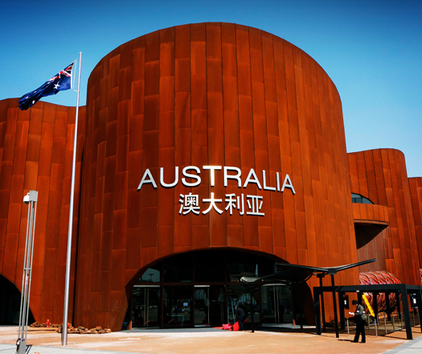
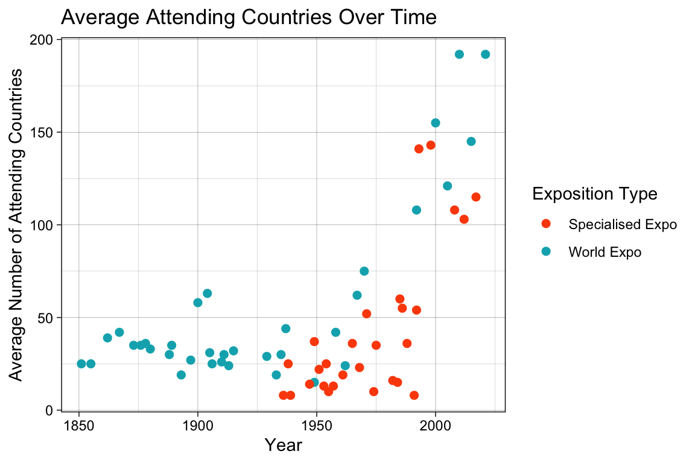
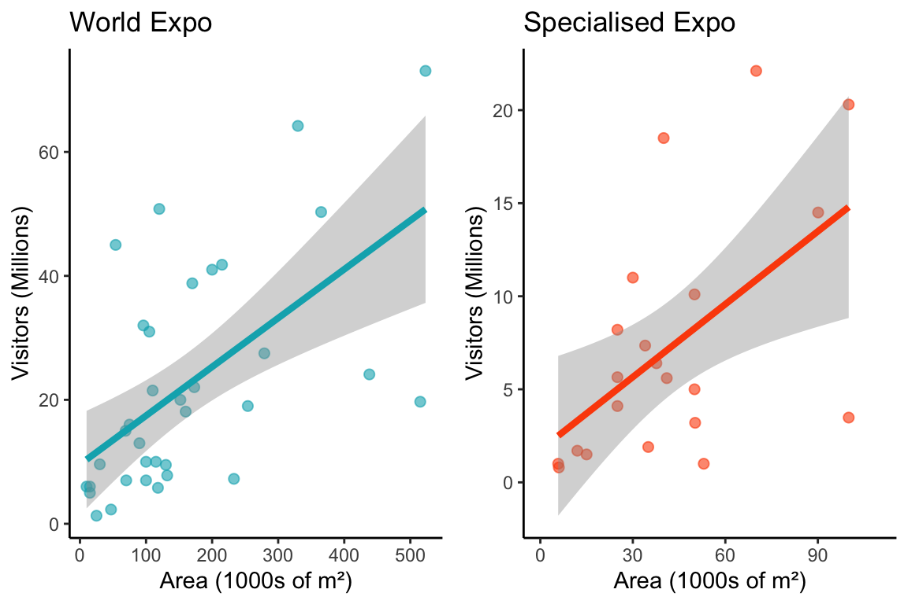
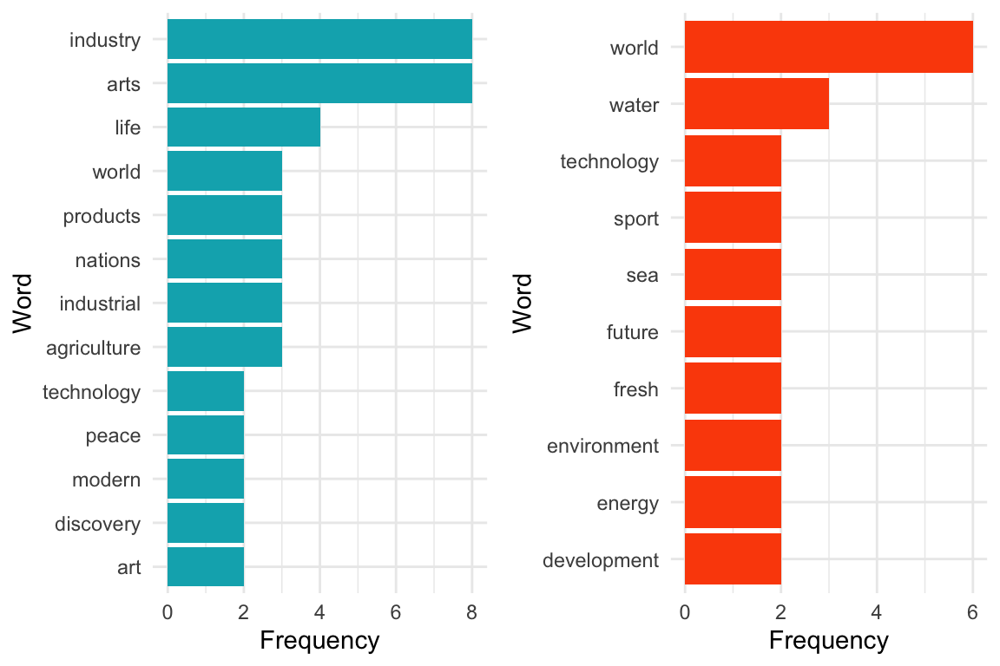

worlds_fairs <- readr::read_csv('https://raw.githubusercontent.com/rfordatascience/tidytuesday/master/data/2024/2024-08-13/worlds_fairs.csv')Penny for Thoughts
Chances are, most of us have either been to an Expo or at least heard about one, especially when it’s hosted in our own country. It’s a massive event that takes the whole nation’s effort to pull off successfully. But did you know there are actually two kinds of Expos? The World Expos and Specialised Expos.
In this blog, we’re going to dive into what makes these two types of Expos different—looking at their costs, scale, and themes. By the end, you’ll have a better idea of what to expect from each one.
A Glimpse of our Conclusion
In short, World Expos tend to be costlier, attract bigger crowds, and involve more countries, while Specialised Expos are more predictable and smaller in scale.
Interestingly, even though Specialised Expos often cost more on average, World Expos consistently draw in more visitors and international attention. (Just keep in mind, some of the World Expo costs are outliers, so the data might be a bit skewed.)

Source of Data
The data used in this analysis comes from the Tidy Tuesday Project published on August 13th, 2024, under the CC-BY 1.0 license. It is titled “World’s Fairs” and was originally scraped from Wikipedia’s list of world expositions. The Tidy Tuesday team cleaned the data, and the original cleaning script is available on GitHub.
You may get the data directly from TidyTuesday with the following code:
The data set is pre-cleaned, but it is still considered good practice to separate the data set by type of Expo:
expo_world <- worlds_fairs %>% filter(category == "World Expo")
expo_spec <- worlds_fairs %>% filter(category == "Specialised Expo")Introduction
What is Expo: World Expos and Specialised Expos are massive global events that highlight the latest in technology, culture, and international collaboration. They put the host country in the spotlight and draw attention from around the world.
Why does it matter: Expos don’t just attract visitors; they also drive economic growth. From boosting GDP to creating jobs and sparking economic activity through spending and supply chains, the impact is significant. That said, the size and cost of hosting these events can vary a lot (find more details here: Global Economic Impact of Exhibitions).
What’s up next: This report digs into how hosting costs connect with the size of the event, based on the number of visitors and participating countries, for both World and Specialised Expos. Understanding these links can help future visitors and hosts make smarter plans and investments. However, once again, it’s important to remember that some cost outliers might make trends a little tricky to pin down.
Analysis
Comparison of Average Attending Countries
Global participation in both World and Specialised Expos has seen a steady rise over the years Figure 1.
For both event types, the number of participating countries has grown, with World Expos consistently leading the way, particularly after 1950. In fact, some World Expos after 2000 featured more than 150 countries.
While Specialised Expos operate on a smaller scale, they’ve also experienced an increase in international involvement, highlighting the broader trend of growing global engagement.

Correlation between Area Size and Number of Visitors
There’s a clear connection between venue size and visitor numbers for both World and Specialised Expos Figure 2.
World Expos, with their larger venues, often draw over 40 million visitors, showing their grander scale. Specialised Expos follow a similar pattern, but on a smaller scale, with smaller venues attracting fewer visitors.
The numbers suggest that while bigger venues do lead to more visitors in both cases, the effect is much stronger for World Expos. Larger venues come with more variation and unpredictability in attendance for these events.

Top theme of Expos
World Expos focus on broad, universal themes like arts and industry, while Specialised Expos target specific issues like water and energy, offering a more focused exploration.
This distinction reflects the broader scope of World Expos and the more targeted nature of Specialised Expos.

Relationship between Ecnomic Factors and Scale of Expo
World Expos tend to have a lower median cost (40.00) but a much higher average cost (557.89), thanks to a few high-cost outliers Table 1. They also draw bigger crowds, averaging 21.76 million visitors and approximately 46 participating countries.
In comparison, Specialised Expos, while more consistent in cost , attract smaller audiences, with an average of 11.31 million visitors and approximately 37 countries.
| Comparison of Economic Factors and Scale of Events | ||||||
|---|---|---|---|---|---|---|
| World Expo vs Specialised Expo | ||||||
| Expo Type | Cost | Visitors | Attending Countries | |||
| Mean | Median | Mean | Median | Mean | Median | |
| World Expo | 557.89 | 40.00 | 21.76 | 15.50 | 45.89 | 34.00 |
| Specialised Expo | 576.71 | 350.00 | 11.31 | 8.20 | 36.86 | 23.00 |
Conclusion
In a nutshell, the analysis of World and Specialised Expos reveals distinct differences in cost, scale, and global participation, directly addressing the initial question of how these events compare. World Expos, despite their variability in cost and outliers, consistently attract larger crowds and more international participation, particularly since the mid-20th century. In contrast, Specialised Expos are more predictable in cost but operate on a smaller scale. These insights provide valuable information for future hosts looking to balance investment with global impact and participation.
Data Description
The following is a list of variables in this data set, including their names and descriptions:
start_month: Month in which the fair beganstart_year: Year in which the fair beganend_month: Month in which the fair endedend_year: Year in which the fair endedname_of_exposition: Name used to describe the faircountry: Country in which the fair was heldcity: City in which the fair was heldcategory: Whether the fair was a “World Expo” or a “Specialised Expo”theme: The stated theme of the fairnotables: Notable buildings, inventions, or events at the fairvisitors: Number of visitors in millionscost: Cost in millions of USD (or millions of another currency, as noted in exceptions)attending_countries: Number of countries which officially attended
Reference
- The Global Association of the Exhibition Industry; Oxford Economics (2019). Global Economic Impact of Exhibitions. https://www.ufi.org/wp-content/uploads/2019/04/Global-Economic-Impact-of-Exhibitions_b.pdf